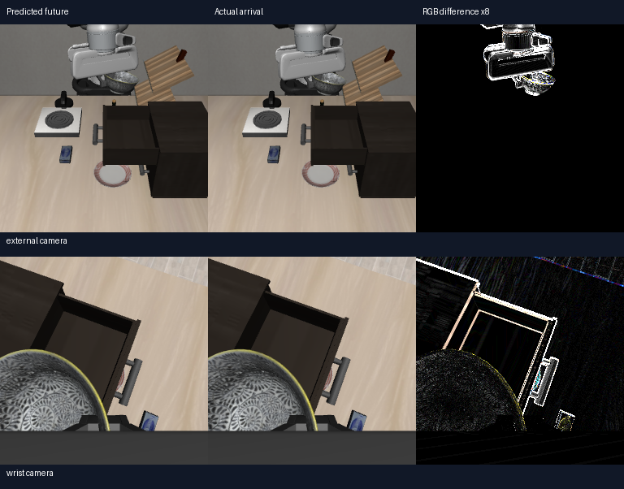

GR00T N1.6 LIBERO / RTX 3090 / H=50, K=4. 기존 checkpoint를 고정하고 예측 길이와 MLP 갱신 비율을 비교했습니다.
범위: 현재 simulator 상태를 아는 별도 nominal simulator가 미래를 예측합니다. 실제 미래 관측을 읽지는 않지만, 학습된 영상 예측기보다 유리한 조건입니다. 실제 실행의 이동 명령 배율: 0.98. Applied translational action commands scaled by 0.98 in real execution only, after shared prefix. Nominal simulator predictor uses gain 1. Rotation/gripper unchanged. Attention은 전체 재계산, MLP만 부분 갱신합니다. 실제 비동기 제어·PIM 평가가 아닙니다.
예측된 각 미래 프레임의 영상/VLM MLP 입력·출력 및 액션 생성 3단계 latent를 보관합니다. 도착 후 실제 입력과 예측 입력의 차이가 큰 토큰을 각 층에서 골라 MLP를 다시 계산하고, 실제 state를 넣어 마지막 액션 생성 1단계를 수행합니다. 25%/50%는 MLP 갱신 예산이며 관측된 오차의 희소성을 미리 증명한 수치가 아닙니다.
동일 초기 상태의 짝지은 소규모 평가입니다. 과제별 초기 상태 0, 4를 포함하며 성공 사례만 고르지 않았습니다. 첫 성공 chunk 또는 고정 종료 시점까지 실행합니다. 성공률 우위의 통계적 확증은 아닙니다.
| gain | method | 성공 | 종료 목표 유지 | 도착 후 p50 ms | 첫 준비 평균 s | 모든 준비 평균 s | 준비+보정 총 평균 s | 최대 bank MiB |
|---|---|---|---|---|---|---|---|---|
| 0.98 | early16_s25 | 5/6 | 5/6 | 64.54 | 2.32 | 2.32 | 3.53 | 410.6 |
| 0.98 | fresh1 | 5/6 | 5/6 | 41.10 | 0.00 | 0.00 | 0.84 | 0.0 |
| 0.98 | fresh4 | 5/6 | 4/6 | 64.71 | 0.00 | 0.00 | 1.24 | 0.0 |
| 0.98 | rolling16_s25 | 5/6 | 4/6 | 35.91 | 2.32 | 15.63 | 16.37 | 410.6 |
| 0.98 | whole_dense | 5/6 | 5/6 | 41.35 | 5.74 | 5.74 | 6.58 | 4927.1 |
| 0.98 | whole_replay | 5/6 | 5/6 | 0.00 | 5.76 | 5.76 | 5.76 | 4927.1 |
| 0.98 | whole_s25 | 5/6 | 5/6 | 35.93 | 5.75 | 5.75 | 6.48 | 4927.1 |
| 0.98 | whole_s50 | 5/6 | 4/6 | 39.13 | 5.76 | 5.76 | 6.56 | 4927.1 |
도착 후 p50만으로 전체 시스템이 빨라졌다고 판단하면 안 됩니다. 준비에는 simulator 초기화·과거 replay·미래 rendering·모델 계산이 포함됩니다. 이 구현은 준비 중 환경을 멈춥니다. 준비+보정 시간은 측정된 순차 서비스 비용이며 물리적 동작 시간과 실제 로봇 통신 비용을 포함하지 않습니다. replay의 도착 후 시간은 배열 복사 시간입니다.
| task | init | gain | fresh4 | fresh1 | early16_s25 | rolling16_s25 | whole_s25 | whole_s50 | whole_dense | whole_replay |
|---|---|---|---|---|---|---|---|---|---|---|
| KITCHEN_SCENE4_put_the_black_bowl_in_the_bottom_drawer_of_the_cabinet_and_close_it | 0 | 0.98 | 실패 (352 step) | 실패 (352 step) | 실패 (352 step) | 실패 (352 step) | 실패 (352 step) | 실패 (352 step) | 실패 (352 step) | 실패 (352 step) |
| KITCHEN_SCENE4_put_the_black_bowl_in_the_bottom_drawer_of_the_cabinet_and_close_it | 4 | 0.98 | 성공 (212 step) | 성공 (216 step) | 성공 (212 step) | 성공 (212 step) | 성공 (212 step) | 성공 (212 step) | 성공 (212 step) | 성공 (212 step) |
| open_the_top_drawer_and_put_the_bowl_inside | 0 | 0.98 | 성공 (200 step) | 성공 (228 step) | 성공 (232 step) | 성공 (232 step) | 성공 (228 step) | 성공 (228 step) | 성공 (228 step) | 성공 (228 step) |
| open_the_top_drawer_and_put_the_bowl_inside | 4 | 0.98 | 성공 (180 step) | 성공 (180 step) | 성공 (184 step) | 성공 (184 step) | 성공 (184 step) | 성공 (184 step) | 성공 (180 step) | 성공 (180 step) |
| put_the_cream_cheese_in_the_bowl | 0 | 0.98 | 성공 (112 step) | 성공 (108 step) | 성공 (112 step) | 성공 (112 step) | 성공 (112 step) | 성공 (112 step) | 성공 (112 step) | 성공 (112 step) |
| put_the_cream_cheese_in_the_bowl | 4 | 0.98 | 성공 (104 step) | 성공 (100 step) | 성공 (104 step) | 성공 (104 step) | 성공 (104 step) | 성공 (104 step) | 성공 (104 step) | 성공 (104 step) |
| gain | method | reference | 이김 | 짐 | 쌍 수 |
|---|---|---|---|---|---|
| 0.98 | fresh1 | fresh4 | 0 | 0 | 6 |
| 0.98 | early16_s25 | fresh4 | 0 | 0 | 6 |
| 0.98 | rolling16_s25 | fresh4 | 0 | 0 | 6 |
| 0.98 | whole_s25 | fresh4 | 0 | 0 | 6 |
| 0.98 | whole_s50 | fresh4 | 0 | 0 | 6 |
| 0.98 | whole_dense | fresh4 | 0 | 0 | 6 |
| 0.98 | whole_replay | fresh4 | 0 | 0 | 6 |
| 0.98 | fresh4 | fresh1 | 0 | 0 | 6 |
| 0.98 | early16_s25 | fresh1 | 0 | 0 | 6 |
| 0.98 | rolling16_s25 | fresh1 | 0 | 0 | 6 |
| 0.98 | whole_s25 | fresh1 | 0 | 0 | 6 |
| 0.98 | whole_s50 | fresh1 | 0 | 0 | 6 |
| 0.98 | whole_dense | fresh1 | 0 | 0 | 6 |
| 0.98 | whole_replay | fresh1 | 0 | 0 | 6 |
저장한 예측/실제 관측 쌍을 모두 dense로 다시 계산한 별도 진단입니다. 이 진단은 제어기의 토큰 선택에 사용되지 않습니다. 아래는 MLP 입력 residual 제곱 에너지 기준, 프레임·층별 비율의 평균입니다. 완전히 일치하는 예측 시작 프레임은 제외합니다.
| method | 층 종류 | 프레임 | 상위 25%가 포함한 오차 에너지 | 90% 에너지에 필요한 토큰 | 99% 에너지에 필요한 토큰 |
|---|---|---|---|---|---|
| rolling16_s25 | vision | 21 | 83.4% | 34.8% | 75.5% |
| rolling16_s25 | vlm | 21 | 89.1% | 26.3% | 63.5% |
| whole_s25 | vision | 15 | 84.1% | 32.3% | 66.2% |
| whole_s25 | vlm | 15 | 88.3% | 27.3% | 59.2% |
오차가 일부 토큰에 집중되는 현상은 관찰되지만, 나머지 토큰의 오차가 0이거나 접촉 성공에 무관하다는 뜻은 아닙니다. 층별 집중도 및 fresh4 대비 action 오차. 원본 관측 NPZ는 로컬 results의 observation_pairs에 보관하며 이 보고서에는 hash만 포함합니다.
native/split 및 전체 갱신 action 일치, 실제/복제 시작 state·RGB 일치, 예측 캐시 불변성, 실제 MLP 입력 행 감소를 검증했습니다.
집계 · 짝 비교 · rollout 원자료 · 호출별 시간·예측 오차 · 설정 · 구현·범위 · 소스 hash 검증
2% 오차에서 기본 성공률이 모두 같아 추가한 탐색적 조건입니다. 같은 6개 초기 조건을 사용합니다. 설정·원자료·전체 표.
| method | 기본 성공 | chunk 종료 목표 유지 | 도착 후 p50 ms |
|---|---|---|---|
| fresh1 | 5/6 | 5/6 | 40.84 |
| fresh4 | 4/6 | 4/6 | 64.49 |
| rolling16_s25 | 5/6 | 5/6 | 35.67 |
| whole_replay | 5/6 | 5/6 | 0.00 |
| whole_s25 | 5/6 | 5/6 | 35.73 |
판단: 부분 MLP 재계산은 도착 후 시간을 줄였지만, 보정 없이 예측 액션만 실행해도 같은 5/6 성공이었습니다. 이번 소표본에서 보정의 독립적인 성공률 이득은 확인되지 않았습니다. 긴 예측과 짧은 반복 예측도 기본 성공률은 같았습니다. 준비 비용을 숨길 수 있는 실제 비동기 스케줄과 더 민감한 접촉 과제가 남아 있습니다.
검증 원자료: fresh4·전체 feature 보정·예측 액션 그대로 실행이 성공 시점과 최종 state까지 정확히 일치했습니다. 24개 예측/실제 미래 프레임의 state·RGB도 모두 일치합니다. 이는 구현 검증이며 정확도 우위의 증거는 아닙니다.
저장된 whole25 쌍 중 손끝 위치 오차가 가장 큰 사례를 골랐습니다(대표 평균 아님). 오른쪽은 RGB 차이를 8배 표시했으며 feature 오차 지도가 아닙니다.
